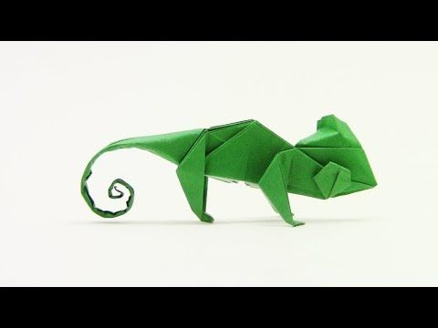

Origami Designs
About Us
Follow Us
Interesting facts about camel
- Camels have three sets of eyelids and two rows of eyelashes to keep sand out of their eyes.
- Camels have long been domesticated and, as livestock, they provide food and textiles
- Camels can drink up to 40 gallons in one go.
- Camels can completely shut their nostrils during sandstorms

Interesting facts about pigeon
- Pigeons are incredibly complex and intelligent animals
- Pigeons are renowned for their outstanding navigational abilities
- Pigeons have excellent hearing abilities
Interesting facts about panda
- Bamboo is critical to their diet
- They have great camouflage for their environment
- But they do occasionally eat something other than bamboo
- Pandas eat consistently for 12-14 hours a day

Interesting facts about chameleon
- Chameleons are reptiles that are part of the iguana suborder
- Changing skin color is an important of communication among chameleons
- Most chameleons have a prehensile tail that they use to wrap around three branches